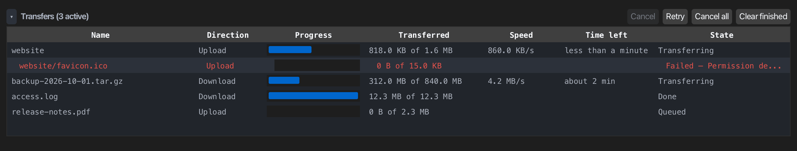
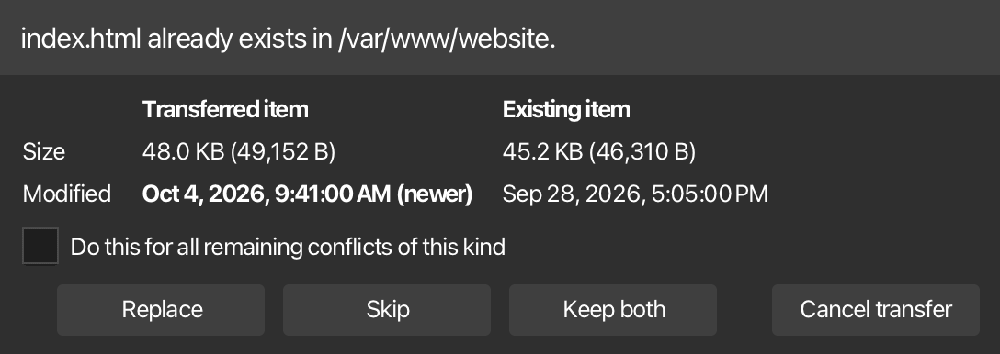
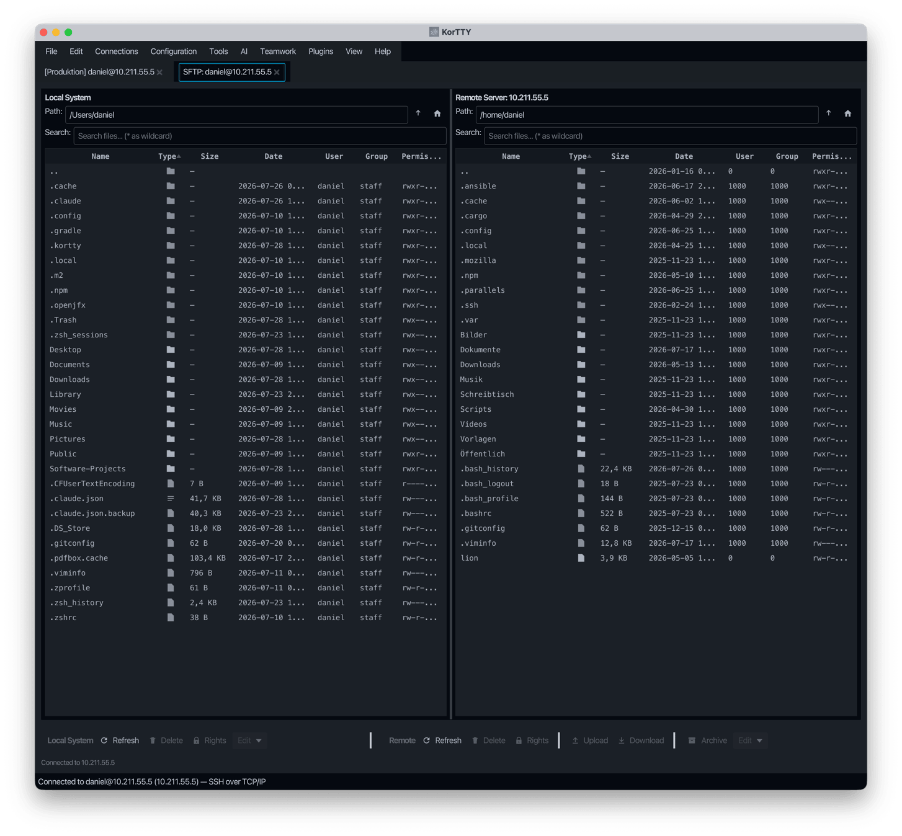

SFTP file manager¶
The integrated SFTP Manager provides a graphical file manager for transferring files between your local machine and remote servers via SFTP. It features a dual-panel layout, full file operations support, and seamless integration with the Snippet Editor for remote file editing.
Opening SFTP Manager¶
You can open the SFTP Manager in two ways:
- Menu: Connections → SFTP-Client... (Ctrl+Shift+U, on macOS Cmd+Shift+U). With a connected terminal tab in front, it opens on that tab's focused pane, as Open SFTP Here does; otherwise you pick a connection first.
- From a terminal: Connections → Open SFTP Here, Open SFTP here in a terminal tab's right-click menu, or Open SFTP here in a pane's right-click menu. The command palette finds it too. See Opening from a terminal tab.
- Dashboard: right-click a connected session > SFTP-Client...
If the connection uses a temporary SSH key that has expired, you will be prompted to enter a new key before the connection can proceed.
Opening from a terminal tab¶
Open SFTP Here opens the SFTP Manager on the SSH session the terminal pane already has, so there is no second login: no second password or MFA prompt, no second hop through a jump server, and no CyberArk access reason asked again. It uses the pane you are typing in (or the pane you right-clicked), and in a split tab whose pane runs another connection it opens as that pane's user and server, not the tab's.
The remote side starts in the folder the shell is in: the one the shell reports (OSC 7 or the korTTY agent hook), else the folder shown in the prompt, else the folder of your last cd. ~ and relative folders are resolved against your home folder. If that folder no longer exists, the login folder is shown and the status bar says so. Two cases start in the login folder on purpose, with a note in the status bar: a pane where a different session is active (after su, sudo -i or a nested ssh), because its folder belongs to another user or host, and a connection with a shell startup command, which may switch user before the first prompt.
Each pane gets its own SFTP tab, so two panes of the same server can be browsed side by side; choosing Open SFTP Here again for the same pane selects its tab. A tab opened from Connections → SFTP-Client... with a connection picked is still one per connection, and the two kinds never replace each other.
Such a tab copies at most two files at once, even when Settings → SFTP Manager allows more, so the terminal on the same session stays responsive. Closing the tab never closes the terminal. When the terminal's session ends, or the pane is closed or now runs another user or host, the tab shows Disconnected with Reconnect, which uses the pane's session again once it is back, and Separate login, which closes the tab and opens one with its own login for the pane's connection.
When the pane has no SSH session to share (a Mosh or local shell tab), or the server or a proxy refuses SFTP on it, korTTY opens an SFTP tab with its own login for the pane's connection instead, as before. A saved project restores such a tab as an ordinary SFTP tab with its own login, in the folders it was in.
Interface¶
The SFTP Manager uses a two-panel layout for easy side-by-side file management:
| Left Panel (Local) | Right Panel (Remote) |
|---|---|
| Browse local files | Browse remote files |
| Upload to remote | Download to local |
Sortable columns¶
Both panels display the same columns, all of which are sortable by clicking the column header:
| Column | Description |
|---|---|
| Name | File or directory name |
| Type | Directory (📁) or file (📄) indicator |
| Size | File size in human-readable format (directories show —); sorting uses the exact byte count, with folders first |
| Date | Last modified date and time |
| User | Owner name (local: from filesystem; remote: from SFTP or UID) |
| Group | Group name (local: from filesystem; remote: from SFTP or GID) |
| Permissions | Unix-style permissions (e.g., rwxr-xr-x) |
Default sort order¶
By default, files are sorted by the Type column in this order:
- Parent directory (
..) — always at the top - Directories starting with "." (e.g.,
.git,.config) — alphabetically - Other directories — alphabetically
- Files starting with "." (e.g.,
.bashrc) — alphabetically - All other files — alphabetically
Click any column header to sort by that column. Clicking the Type column again toggles between ascending and descending order. The parent directory (..) stays at the top whichever column and direction you sort by.
Browsing the server¶
Remote folders are read in the background, so the window stays responsive even for a folder with tens of thousands of entries. While a folder loads, a Loading… indicator covers the remote list. The path field and the list switch to the new folder only once it has been read; if it cannot be read (it does not exist, or you lack the rights), an error is shown and the folder you were in stays.
Type a path into the remote Path field and press Enter to go there. ~ and ~/… stand for your login directory on the server, and a path without a leading / is taken relative to the folder shown; .. and . are resolved, so ../logs opens the sibling folder logs.
Lost connection¶
When the server or the network ends the session, the status bar shows Disconnected from host with a Reconnect button, and the remote actions are disabled. If the connection drops without the server saying so, the first remote action you try (Refresh, Upload, Download and so on) brings up the same state instead of doing nothing.
Reconnect opens a new session with the same credentials and lists the folder you were in. The server's host key is checked as on the first connect: an unchanged key connects without a prompt, a changed key is still blocked.
Reopening with a project¶
SFTP Manager tabs are saved with a project. Opening the project with Auto-Reconnect reconnects each tab at the local and remote folders it was in when you saved. A folder that no longer exists opens the home folder instead; on the remote side the status bar says so.
File operations¶
Each panel has its own group of toolbar buttons below the lists (local on the left, remote on the right) and a right-click context menu:
| Operation | How |
|---|---|
| Upload | Select local files or folders and click Upload, or drag them onto the remote panel; see Drag and drop |
| Download | Select remote files or folders and click Download, or drag them onto the local panel |
| Rename | Select one entry and press F2, or choose Rename in the context menu. An existing entry of the new name is never replaced; you get an error instead |
| New Folder | Click the folder button next to Refresh, or choose New Folder in the context menu, in either panel. The folder is created in the folder shown; a name that already exists is an error |
| Delete | Select entries and click Delete, choose Delete in the context menu, or press Del (Ctrl+Backspace, on macOS Cmd+Backspace). You confirm before anything is deleted |
| Copy | Copy to... in the context menu copies within the same side: locally into a folder you pick (in the background), remotely into a folder path you type. A remote folder copied where a folder of that name exists merges into it; copying an item onto itself or into one of its own subfolders is refused with an error |
| Edit in Snippet Editor | Select exactly one local or remote file, then use the Edit toolbar menu or the right-click context menu |
| Archive | Archive in the remote toolbar, or Archive... in either context menu, packs the selection as ZIP, TAR.BZ2 or 7z, depending on the tools available on that side. A local archive can have a password; an archive on the server cannot, because zip and 7z would need the password on the server's command line, where other users of the server can read it |
| Extract Here | Right-click one archive on the server (.zip, .tar, .tar.gz/.tgz, .tar.bz2, .tar.xz or .7z) and choose Extract Here.... It is unpacked on the server into a new folder next to it; see Extracting archives on the server |
| Set Owner/Permissions | Select entries, then click Rights or choose Set Owner/Permissions... in the context menu. Separate fields for User, Group, and octal permissions (e.g., 755) |
A name for Rename or New Folder must be a single entry in the folder shown: it may not be empty, . or .., or contain / or \. The dialog stays open with an error until the name is usable.
Extracting archives on the server¶
Extract Here... in the remote context menu unpacks the selected archive on the server itself, so nothing is downloaded or uploaded. After you confirm, a progress window shows each step, and Cancel stops the extraction and removes what was already unpacked.
- Always a new folder — the files land in a new folder next to the archive, named after it without the extension (
site-1.2.tar.gzbecomessite-1.2). If that name is taken, korTTY usessite-1.2 (1),site-1.2 (2)and so on; an existing file or folder is never overwritten or merged into. - Checked before anything is written — korTTY first lists the archive and refuses it as a whole when an entry would land outside the new folder: an absolute path,
..that climbs above the folder, a drive letter such asC:, a name with a line break, a device file, or a link whose target lies outside. Nothing is written in that case. - Checked again after unpacking — the archive is unpacked into a hidden staging folder (
.kortty-extract.plus random characters) that only you can open, without taking over the owners stored in the archive. korTTY then checks every symbolic link in it; if one points outside the folder, the staging folder is deleted and you get an error. Only a clean result is renamed to the new folder, so it appears complete or not at all. - Tools on the server — ZIP needs
unzip, the tar formatstar, and 7z7zor7za. If the tool is missing, the error names it. With a tar other than GNU tar (for example BusyBox), archives with hard links are refused, because their targets cannot be checked. - No passwords — password-protected archives are refused with a message: the tools would need the password on the server's command line, where other users of the server can read it.
Drag and drop¶
You can drag entries between the two panels, from your desktop into the SFTP Manager, and in small amounts from the server to your desktop. While you drag, the panel or the folder row that would take the drop is highlighted; dropping on a folder row puts the entries into that folder, dropping anywhere else into the folder shown.
| Drag | Result |
|---|---|
| Local rows onto the remote panel | Uploaded, as with Upload: a folder merges, and a file of the same name on the server is not replaced without asking (see When a file already exists) |
| Files from Finder, Explorer or the file browser sidebar onto the remote panel | Uploaded the same way |
| Remote rows onto the local panel | Downloaded in the background, as with Download: folders included, and a local file of the same name is not replaced without asking |
| Files from Finder, Explorer or the file browser sidebar onto the local panel | Copied in the background; a name that is already there gets a number, as in report (2).txt, and a file dropped onto the folder it is in is left alone |
| Local rows onto the desktop or another program | Offered as the files themselves |
| Remote rows onto the desktop or another program | Only for at most 20 files with at most 16 MB together, and no folders |
A drag into the same panel does nothing; use Copy to... or Rename there.
Dragging from the server to the desktop
The desktop can only take files that already exist when the drag starts. korTTY therefore downloads the dragged remote files into a private temporary folder first, which can hold the window for up to 5 seconds. Folders, more than 20 files, more than 16 MB or a download that takes longer can only be dropped inside the window; the status bar says so, and you drop them on the local panel instead. A download that runs out of time stops in the middle of its file and deletes what it wrote, so it does not go on filling the temporary folder in the background. A link on the server counts as the file it points to, so a link to a large file is not offered to the desktop either. The temporary copies are deleted when you start the next drag or close the tab.
Keys¶
These keys work in both panels:
| Key | Action |
|---|---|
| F2 (in the list) | Rename the selected entry |
| Del or Ctrl+Backspace (Cmd+Backspace on macOS, in the list) | Delete the selection, after confirmation |
| Enter (in the Path field) | Go to the typed folder |
Uploading files and folders¶
Upload copies the selected local files and folders into the remote folder that was shown when you clicked Upload; browsing elsewhere while it runs does not change the target. Upload stays disabled until the first remote folder has been listed, because the server does not expand ~ itself.
- Uploading a folder again merges into the existing remote folder: other remote files are kept, and for each file that already exists korTTY asks what to do (see below).
- Files are streamed, so their size is not limited by memory; files larger than 2 GB upload like any other.
- If the connection drops during an upload or download, the unfinished items fail as Connection lost with one Disconnected state rather than an error dialog per file; after Reconnect, select them in the transfer list and click Retry.
- Linked folders are not followed. A symbolic link to a file is transferred with the file's content; a link to a folder is skipped and named in the summary at the end, so a link loop cannot make a transfer run forever.
- Downloaded names stay inside the target folder. A server name such as
..ora/bis refused. On Windows, names that Windows reserves for devices (CON,PRN,AUX,NUL,COM1toCOM9,LPT1toLPT9, also with an extension such asnul.txt) and names that end in a dot or a space or contain:are refused too, because Windows would write them somewhere else or change them.
Transfer list¶
Uploads and downloads run in the background, up to three files at a time (Settings → SFTP Manager → Parallel transfers, 1 to 8), each over its own SFTP channel. The first transfer opens the Transfers list at the bottom of the tab; the arrow on its left collapses it to its header. Each row is a file or folder you transferred, with its direction, a progress bar, the bytes so far, the speed and the time left; a folder row adds up the files in it. The status bar shows how many files of all running transfers are done and the overall speed, and says Upload complete or Download complete when a batch is finished.

| Button | Action |
|---|---|
| Cancel | Stops the selected rows; a cancelled file leaves no partial file behind, unless the settings keep it for a later resume |
| Retry | Starts the selected failed or cancelled rows again; for a folder, only what did not arrive |
| Cancel all | Stops every transfer, including an open File already exists question |
| Clear finished | Removes the rows that are done, skipped or cancelled; failed rows stay for a retry |
- Failures no longer open one error dialog per file. A failed file gets a red row of its own (also when it is inside a folder you transferred), the reason is in its State column, and once the batch is finished one summary window lists the failed files and the linked folders that were not followed. The summary does not block the tab.
- The lists follow the transfers. When files arrive in the folder a panel shows, that panel is listed again shortly afterwards; a folder you browsed away from is not.
- Files arrive complete or not at all. A file is first written as
name.kortty-partnext to the target and gets its real name only once it is complete, so an interrupted transfer never leaves a half-written file under the real name. The one exception is replacing a server file that belongs to another user, which is written in place (see When a file already exists). - Interrupted transfers continue where they stopped. After a failure or a lost connection, Retry continues an unfinished file instead of starting over; see Resuming interrupted transfers.
- Closing the tab asks while transfers run. The tab's close button, File > Close Tab, Close All Tabs, closing the window and quitting korTTY first ask Cancel n running transfers and close?; Keep tab open is the default and leaves every transfer running. Closing cancels the transfers that are not finished and deletes their partial files, unless Settings → SFTP Manager keeps the partial files of cancelled transfers. Finished or failed rows ask nothing, and the automatic closing of idle tabs waits until the transfers are done.
- Leftover partial files are shown in italics, with a tooltip. Remove leftover partial files at the end of either panel's context menu deletes the
.kortty-partfiles in the folder shown after a confirmation; partial files of transfers that are still running are left alone.
Resuming interrupted transfers¶
A transfer that fails, or whose connection is lost, keeps its name.kortty-part file, and Retry (after Reconnect, if the connection was lost) continues it from where it stopped. While it continues, its State column says Continuing.
- Only when nothing has changed. korTTY remembers the size and modification time of the source when the transfer starts. If the source is different on the retry, the partial file is larger than the source, or the last 64 KB before the resume point no longer match the source, the partial file is removed and the file is copied from the beginning.
- Only your own partial files. On the server a partial file is continued only when it is still a plain file owned by the user you are logged in as; a link or a file of another user at that name is never written to. On your computer the partial file is never followed through a link either. A partial file korTTY did not leave for this very transfer (another tab, another computer or another user may be writing it right now) is neither continued nor removed: the transfer fails with a message naming the file, and you remove a real leftover with Remove leftover partial files.
- Cancel removes the partial file unless Settings → SFTP Manager → Keep the partial file when a transfer is cancelled is on. With Resume interrupted transfers switched off there, every unfinished partial file is removed and a retry always starts over.
- What korTTY stores. The remembered sizes and times are kept in
sftp-resume-index.jsonin korTTY's configuration folder, readable only by you. An entry holds a fingerprint of the connection and the two paths, not the paths or host names themselves, and never file content; entries of transfers you never retried are dropped after 30 days. The file is not part of the configuration backup, because the partial files it describes stay on this computer and its servers. - Leftover partial files of transfers you gave up on can be removed with Remove leftover partial files in either panel's context menu (see Transfer list).
When a file already exists¶
An upload or download never replaces an existing file silently. When the target folder already has an entry of the same name, korTTY shows File already exists with the size and modification time of both sides (the later time is marked as newer) and these choices:
| Choice | Result |
|---|---|
| Replace | The existing file is replaced by the transferred one |
| Skip | The existing entry is left alone and this item is not transferred |
| Keep both | The item is transferred under a free name with a number, such as report (1).txt; a double extension stays together (backup (1).tar.gz), and a dotfile gets the number at the end (.bashrc (1)) |
| Cancel transfer | The rest of the batch stops; closing the dialog or pressing Esc does the same |

- Do this for all remaining conflicts of this kind answers every later conflict of the same kind in that batch without asking again. The kinds are kept apart: replacing all files never replaces a symbolic link or a folder.
- A folder onto a folder of the same name merges without asking; only the files inside it can conflict.
- A symbolic link is never replaced. When the existing entry is a link, only Skip and Keep both are offered, so a transfer cannot write through a link to a file somewhere else.
- A file and a folder cannot replace each other. When one side is a file and the other a folder, only Skip and Keep both are offered.
- A file owned by another user is written in place. When the existing remote file belongs to another user, the dialog says so; replacing it writes into the file directly, so its owner and permissions stay as they are.
- One question at a time. When several files of a batch conflict at once, korTTY asks about one of them and waits with the others, so an answer for all of them arrives before the next question. Closing the tab answers an open question with Cancel transfer.
- The question can be answered in advance. Settings → SFTP Manager → When the target already exists can skip existing files or overwrite them without asking; links and file/folder mismatches are still asked about. An organization can set this choice for you.
- On a computer whose disk ignores upper and lower case (the macOS and Windows default), a name that differs only in case counts as the same name, both for the question and for the numbered name Keep both picks.
When file transfer is turned off by your organization¶
An organization can switch file transfer off with its enterprise policy (file-transfer = "deny"). The SFTP Manager then still opens and browses the server, and renaming, deleting, permissions, archives, search and copying on the server keep working, but Upload, Download and Retry in the transfer list are greyed out, dragging files onto the server panel or server files onto the local panel is not accepted (the pointer shows no copy symbol), and remote files cannot be dragged to the desktop. Files from the desktop can still be dropped onto the local panel. Dropping files onto a terminal pane is refused the same way while you drag, and Copy as file(s) to terminal directory and Copy folder to terminal directory in the Snippet Manager are greyed out for SSH tabs. Open SFTP Here still opens for browsing. JobScheduler jobs that upload, download or sync with SFTP, and rsync jobs, fail with the same message without connecting. Commands such as scp typed into a terminal are not affected.
Permissions¶
The permissions field of Set Owner/Permissions and of the remote archive dialog accepts exactly three octal digits, such as 755 or 644; leave it empty (or unchanged) to keep the current mode. Anything else keeps the dialog open with an error, so no other text ever reaches chmod.
Editing files with Snippet Editor¶
The Edit in Snippet Editor action is enabled only for a single selected file. It is disabled for:
- Folders
- The parent-directory entry (
..) - Multiple selections
Local files are read directly from the local filesystem; remote files are downloaded through the active SFTP session into the editor.
When the file opens in the Snippet Editor, the full toolbar remains available, including:
- Formatting and syntax checking
- Editor profiles and styling
- Line numbers and word wrap
- Configured AI actions
The file-mode buttons provide these save choices:
- Overwrite file — writes the current editor content back to the original local or remote file
- Save as... — writes a new local file through a file chooser, or for remote files prompts for a new file name in the same remote directory
- Save as snippet — stores the current content as a new Snippet Manager snippet without marking the source file as saved
An organization can restrict editing server files with the load-into-snippet-editor key of its enterprise policy. With read-only, remote files still open in the Snippet Editor and can be saved as a snippet, but Overwrite file and Save as... are locked and their tooltip names the policy. With deny, Edit in Snippet Editor and Open image are disabled for remote files. Local files in the left panel are on your own computer and stay editable either way.

Editing in your own editor¶
Edit in External Editor (in the right-click menu of a server file and in the remote Edit menu) opens the selected server file in your own text editor and copies every save back to the server. Choose the editor under Settings → SFTP Manager → External editor; without one, the file opens as text in the system's editor.
- Local copy — the file is downloaded into a private folder named
kortty-remote-edit-…in the system temp folder that only you can open, under a cleaned-up name: characters other than letters, digits,.,_,-and spaces become_, and Windows device names such asCONget a_in front. A symbolic link is followed once and the file it points to is edited. - Auto-upload — korTTY checks the copy every second. About a second after you save, the new content is uploaded and the status bar says Uploaded with the file name; saving the same content again uploads nothing. The upload works like any other: through a
.kortty-partfile that keeps the file's permissions, or written in place when the file belongs to another user, so its owner stays. - Remote edits — the list below the transfer list shows each file being edited, whether it waits for saves, uploads or was uploaded (with the time), and offers Upload now for editors whose saves are not noticed, and Stop.
- Conflicts — before each upload korTTY checks that the server file is still the one it downloaded (size, time, owner and, up to 10 MB, the content). If someone else changed or deleted it, it asks: Overwrite server file, Save local copy as... (keeps your version on this computer and stops watching), Stop watching or Decide later (keeps watching; nothing is uploaded until the next save or Upload now).
- Cleanup — Stop, closing the SFTP tab and quitting korTTY delete the local copy. When the connection is lost before your last save was uploaded, korTTY first offers Save copy as.... Folders a crash left behind are removed at the next start once they are a day old.
The editor is always started directly, never through a shell or as the file's default application, so a downloaded script never runs. With the enterprise policy's load-into-snippet-editor = "read-only" the file opens but saves stay on your computer and the list says so; load-into-snippet-editor = "deny" or file-transfer = "deny" grey out Edit in External Editor.
Editing as root¶
Open With → Edit as Root (sudo)... (in the right-click menu of a server file, and Edit as Root (sudo)... in the remote Edit menu) opens a file that only root may change, such as a configuration file under /etc, in your own editor, the same way as Editing in your own editor. The row in Remote edits carries a sudo badge.

- Password — korTTY first tries
sudo -n, so withNOPASSWDor a still-valid sudo ticket nothing is asked. Otherwise it asks for your password in a masked dialog. When the JobScheduler has a sudo password saved for the server or its group, the dialog offers to use it for this server from now on; korTTY never uses it without that choice, and unticking the box later takes it back. The password is kept only while the file is being edited, is handed to sudo only when sudo actually asks for it, and is wiped when you stop. It never appears in a command line, the log, an error message or the session journal. - Reading — the file is read with
sudo catstraight into the private local copy; nothing is written on the server for that. - Saving — each save travels to the server over the connection, into a staging folder that root creates and owns, and only after its size and SHA-256 match is it written into the file itself. The file keeps its inode, owner, permissions, ACLs and SELinux label, and a broken transfer never leaves it half written. The staging folder is removed in every case. Before each save korTTY reads the file again as root; if someone else changed it meanwhile, the same conflict question as above appears.
- Links — when the path is a symbolic link, or leads through a folder that is one, korTTY shows where the file really is and edits it there only after you confirm. Right before every read and write, root checks again that the file is no link and its folder is still the same real folder.
- Refused — a file in a folder you can write to without sudo, or anywhere below such a folder, is not edited as root, because anything running as you could replace the file or a folder on its way in the meantime; the message names that folder, and you edit the file normally. Files larger than 64 MB are refused too.
- Journal — when a terminal on the same connection records a session journal, it gets one line,
sudo-editand the path; never the content. - What the server needs —
sudo, a POSIXshwithmktemp,catandstat, andsha256sumorshasumfor the content check. Without either hash tool korTTY still compares the size before it writes, but cannot compare the content. - Servers with
requiretty— when the server's sudo configuration containsDefaults requiretty, sudo refuses to run without a terminal, and korTTY says sudo on this server requires a terminal (requiretty), and korTTY never runs sudo with one. korTTY does not work around this by opening a terminal: a terminal changes the bytes passing through it (line endings, control characters) and echoes what it is sent, so neither the file nor the password would arrive intact and unseen. An administrator can lift the rule for your account with a line such asDefaults:alice !requiretty(edited withvisudo); until then, edit the file in a terminal tab, for example withsudoedit.
The enterprise policy can switch the feature off with sftp-sudo-edit = "deny"; it is also greyed out while file-transfer is denied or load-into-snippet-editor is not allow.
Search¶
The search field above each list filters the folder shown as you type, without leaving it; the parent entry .. stays visible. korTTY evaluates the wildcards itself, the same way for local and remote names. A pattern with a wildcard has to match the whole name, ignoring case:
| Wildcard | Matches | Example |
|---|---|---|
* |
Any number of characters | *.log finds all log files, backup* all names starting with "backup" |
? |
Exactly one character | data?.csv finds data1.csv, not data10.csv |
[abc], [a-z] |
One of the listed characters; [!abc] or [^abc] one that is not listed |
[ab]* finds names starting with a or b |
{py,sh} |
One of the alternatives | *.{py,sh} finds Python and shell files |
Text without a wildcard matches anywhere in the name, ignoring case: rep finds Report.txt. A pattern that cannot be read, such as an unclosed [, is searched for as plain text.
Searching subfolders on the server¶
Check Include subfolders next to the remote search field and press Enter to search the remote folder shown and every folder below it, with the same wildcards and the same case-insensitive matching. The remote list switches to the results: each hit shows its path below the searched folder, and the line above the list counts the hits while the search runs and says how it ended, for example 120 results or 5000 results, stopped at limit. Double-click a hit, or select it and press Enter, to open its folder with the hit selected. Back to folder returns to the folder listing, and Esc in the search field stops a running search (a second Esc leaves the results).
| Limit | Value |
|---|---|
| Folder levels below the searched folder | 10 |
| Results | 5000 |
| Time | 60 seconds |
When the server lets korTTY run commands and has find, the search runs there and only the matching paths travel over the connection; otherwise korTTY walks the folders over SFTP, which is slower and stops after reading 200,000 entries. Symbolic links are listed but never followed, so a link that points back up the tree cannot make the search loop. Stay on this file system (on by default) keeps find out of other mounted file systems such as network shares and /proc; the walk over SFTP cannot tell file systems apart. Folders you cannot read are skipped. The search only reads names on the server, so it stays available when an enterprise policy blocks file transfers.